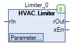

Limiter (FB)¶
FUNCTION_BLOCK Limiter
Kurzbeschreibung¶
Grenzwertüberwachung eines Analogwertes
Darstellung¶

Schnittstellen¶
Eingänge¶
Name Datentyp Wertebereich Initialwert Funktion rIn REAL 0 Analogwerteingang
Ausgänge¶
Name Datentyp Wertebereich Initialwert Funktion rOut REAL Analogwertausgang xErr BOOL
FALSE: keine Grenzwertverletzung TRUE: Grenzwertverletzung
Sollwerte / Parameter¶
Name Datentyp Wertebereich Initialwert Funktion rMinLimit REAL -50 Unterer Grenzwert rMaxLimit REAL 150 Oberer Grenzwert rReplacementOption eLimiterMode InpultValue, MinValue, MaxValue, LastValue, ReplacementValue InputValue Auswahl des Wertes am Ausgang rOut je nach gewählter Option rReplacementValue REAL 0 Wert am Ausgang rOut bei verletztem Grenzwert und Option ‘ReplacementValue’
Funktionsbeschreibung¶
Analogwertausgang rOut¶
Der Analogwertausgang rOut folgt dem Analogwerteingang rIn, solange der Analogwerteingang rIn keinen der beiden Grenzwerte
rMinLimit bzw. rMaxLimit verletzt.
Eine Grenzwertverletzung liegt immer dann vor, wenn der Analogwerteingang rIn kleiner als der Grenzwert rMinLimit oder
größer als der Grenzwert rMaxLimit ist.
Im Falle einer Grenzwertverletzung wird der Analogwertausgang rOut in Abhängigkeit von der gewählten Option rReplacementOption (eLimiterMode) festgelegt.
rIn ReplacementOption rOut Hinweise X InputValue rIn Option ‘InpultValue’ X MinValue rMinLimit Option ‘MinValue’ X MaxValue rMaxLimit Option ‘MaxValue’ X LastValue Letzter Zustand von rOut vor der Grenzwertverletzung Option ‘LastValue’ Achtung: Der letzte Wert wird bei einem Kaltstart der PLC nicht gespeichert! X ReplacementValue rReplacementValue Option ‘ReplacementValue’
Legende: X = beliebig
Digitalausgang xErr¶
Der digitale Ausgang xErr signalisiert eine aktive Grenzwertverletzung.
Grenzwertverletzung xErr Hinweise FALSE FALSE keine Grenzwertverletzung TRUE TRUE Grenzwertverletzung
Legende: X = beliebig
Visualisierung¶
Information¶
Element Autoren Datum Version Anmerkungen Funktion Adam Bartod 09.2016 1.0 Ursprungsversion Programmierung Adam Bartod 09.2016 1.0 Ursprungsversion Test Kevin Rohn, Jochen Reu 12.2016 1.0 Ursprungsversion Dokumentation Jochen Reu 10.2017 1.0 Ursprungsversion Dokumentation Lukas Pfänder 11.2017 0.1.3.0 Revision
Codesys¶
- InOut:
Scope Name Type Initial Comment Input rIn REAL 0 Analogwerteingang rReplacementValue REAL 0 Wert am Ausgang rOut bei verletztem Grenzwert und Option ‘ReplacementValue’ rReplacementOption eLimiterMode eLimiterMode.InputValue Auswahl des Wertes am Ausgang rOut je nach gewählter Option rMaxLimit REAL 150 Oberer Grenzwert rMinLimit REAL -50 Unterer Grenzwert Output rOut REAL Analogwertausgang xErr BOOL Ausgang Grenzwertverletzung